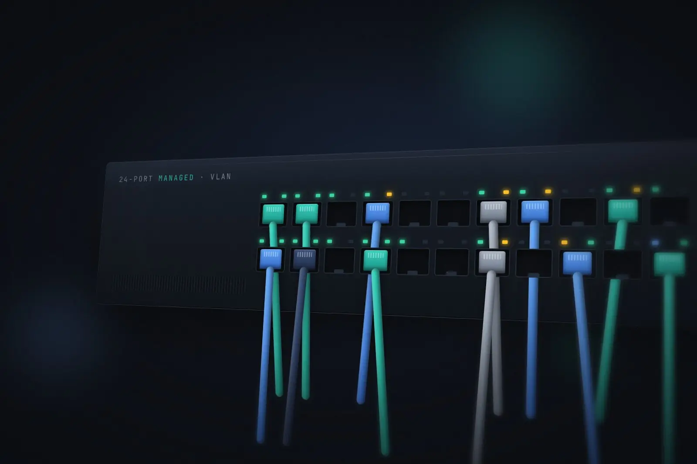

Homelab
Proxmox homelab build
A Proxmox VE homelab I built to get hands-on with virtualisation, networking, Active Directory and monitoring, all running on a single small form factor PC.

Overview
I started the lab in July 2026 as a complete beginner, with no Linux command-line experience. It has grown into a segmented network running an Active Directory lab, a set of self-hosted services and a full monitoring stack, all on a single small form factor PC.
Architecture
Setup
-
Host
An HP 290 G1 SFF with an Intel Core i5-8500, upgraded from 16 GB to 32 GB of RAM, running Proxmox VE. Workloads are organised into resource pools.
-
Networking
A Zyxel USG FLEX 200 firewall and a Zyxel GS1920-24 managed switch. The AD lab sits on its own isolated VLAN, with firewall rules that only allow specific traffic through, such as DNS and monitoring.
-
Active Directory lab
- Domain controller
- File server with department-based NTFS permissions tied to AD security groups
- Windows 11 client for testing Group Policy, including drive mapping with item-level targeting and wallpaper / lock screen policies
-
Self-hosted services
- Pi-hole: network-wide DNS, ad blocking and DHCP
- Home Assistant
- Homarr dashboard
- Plex
-
Monitoring
- Uptime Kuma for uptime checks
- Prometheus and Grafana dashboards for Proxmox, the Windows servers and the switch (via SNMP)
- Alerts sent to Discord
What I've learned
Starting with no Linux command-line experience, the lab has given me hands-on practice with:
- Working on the Linux command line
- Segmenting a network with VLANs and writing firewall rules that only allow what's needed
- Active Directory, group-based NTFS permissions and Group Policy
- Building monitoring and alerting with SNMP, Prometheus and Grafana
Next steps
- Tidy up the network design
- Keep expanding the AD lab